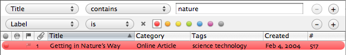

Searching and Filtering
Searching and Filtering
Searching
Searching queries your entries for specific words. Type the words you would like to find in the Search Folder search field. Journler applies the search to the currently selected folder only. If no folder is selected because you are viewing a date, Journler selects the Journal.
As you type Journler uses relevance ranked searching to display the entries that match your request. No matter how many entries you've written, searching performs quickly and accurately, returning with blazing speed the 1000 most relevant entries.
Narrowing Your Search
You can target a specific set of entries when you search by selecting one of the folders in the list at the left. Journler will then display only those entries that both match the search and appear in the folder. Be careful that you have selected the Journal when you want to search all of your entries. Journler automatically selects the Journal if you begin searching while a date is selected.
Search Options
Customize your search preferences by clicking once on the magnifying glass in the search field and selecting one of the two menu items. Interpret Spaces as OR tells Journler to include the entries or documents that contain any of the search terms instead of only those which contain all of them. Searching will return a higher number of results but may be of lower quality.Prefix searching ensures that a word which begins with one of the search terms counts as a match for the document. It is equivalent to appending an asterisk (*) to the end of a search term as you type. Journler can do this automatically for you. Check the Enable Prefix Searching option. For example, with prefix searching enabled "happen" matches both the words "happen" and "happenstance", but with prefix searching disabled, "happen" only matches the complete word and not those which begin with the same letters.
Getting the Best Results
For the best results when looking for a particular entry you will want to combine searching and filtering, discussed below. While searching examines the entire contents of an entry, ignoring the position of the words, filtering allows you to target a specific entry attribute and respects the entire phrase. The distinction is similar to the one Mail makes when searching the Entire Message versus searching the From or Subject field alone.For example, if you know the title of the desired entry and just need to locate it, use filtering. If you know only that the entry contains a particular word, opt for searching instead. The general rule is when you know your search phrase applies to a particular entry attribute, say the title or tags, go with filtering. When the details are fuzzier take searching. And of course, you may combine both for the most targeted results.
Filtering
Filtering is like setting a smart folder on top of the entries you are browsing and sifting them on the fly. It is a revolutionary way to access your ideas and information and another Journler first. Filtering works just like a static smart folder except that as you change the conditions the relevant entries are revealed. For the most impressive results search and filter at the same time, zooming in on only the entries that matter, fast like you wouldn't believe it.
When you're finished searching and filtering save the results as a folder or the criteria as a smart folder. From the search field menu choose Save Results to New Folder to create a regular folder containing the entries still left in the browse table. To save the filter's conditions as a smart folder, hold the alt/option key as you press the filter toolbar button. Instead of closing the filter, Journler will create a smart folder with its conditions.
For more information on the available filter conditions and how to use them, refer to smart folders.